Interpretability &
Explainability
Opening the black box to earn trust
Albert No · Yonsei University
Trustworthy AI · 2026
Contents
The Black Box
Why "open it up" matters for trust
A Model Is a Black Box
A network maps input to output through billions of weights.
- It answers, but does not explain
- The reasoning hides inside the numbers
- Right answer, unknown reason
Accuracy alone does not earn trust.
Why Open It Up
An explanation serves four needs at once.
Debug
Find why it failed.
Audit
Check for bias or shortcuts.
Comply
Give a right to explanation.
Trust
Decide when to rely on it.
The Husky and the Wolf
Researchers rigged a demo: every training wolf photo had snow.
- The classifier never looked at the animal
- It predicted "wolf" whenever it saw snow
- Shown the explanation, trust fell from 10/27 to 3/27
The explanation exposed the hidden shortcut.
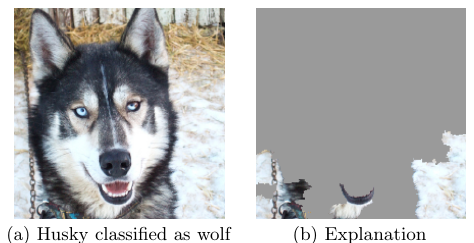
Two Routes to Understanding
Intrinsic
Model is readable by design: a short decision tree, a linear rule.
Post-hoc
Explain a trained black box after the fact, from outside.
Intrinsic = readable. Post-hoc = approximated.
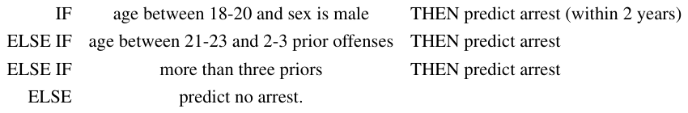
The Accuracy Trade-off
Simple models explain themselves but often fit worse.
Often, not always: the gap keeps shrinking.
The Rudin Objection
Some argue the trade-off itself is overstated.
- High-stakes calls: bail, parole, medical triage
- There, use a model that is readable by design
- Explaining a black box after the fact invites harm
"Stop explaining black boxes, use interpretable models."
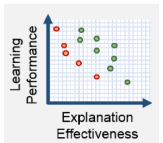
Explanation Is Not the Model
A post-hoc explanation is a story about the model, not the model itself.
The story can be wrong even when it sounds convincing.
Feature Attribution
Which inputs moved the prediction
The Attribution Question
One prediction, one question.
The question
Which input features pushed this output up or down?
Each feature gets a signed score: positive helps, negative hurts.
Attribution as a Bar Chart
A loan model rejects an applicant. Why?
Each bar: one feature's push on this decision.
LIME: Local Surrogate
LIME (Local Interpretable Model-agnostic Explanations).
- Wiggle the input, watch the output change.
- Fit a simple linear model nearby.
- Read its weights as the explanation.
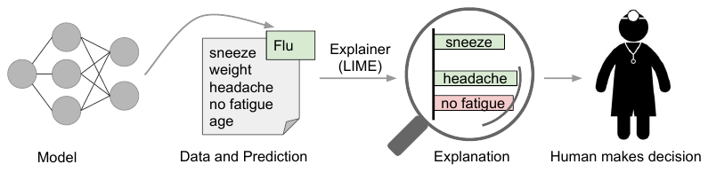
Local, Not Global
LIME explains one prediction, not the whole model.
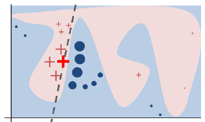
Bold cross = the instance; dashed line = LIME's fit, valid only nearby.
SHAP: Fair Credit
SHAP (SHapley Additive exPlanations) shares the credit fairly.
- Borrowed from cooperative game theory
- Each feature is a "player" in a team
- Its score = average marginal contribution
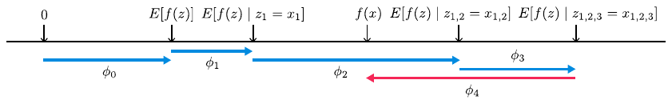
The Shapley Value
Add the feature to every possible group of others, one at a time.
- Each time, note how much the prediction moves
- Average that move across all the groups
- That average is the feature's fair share
Fair credit, borrowed straight from cooperative game theory.
Why SHAP Is Trusted
The Shapley value is the only rule with all fair properties.
- Shares the full prediction, nothing lost
- Useless feature gets zero
- Equal features get equal credit
Uniqueness comes from game theory, not heuristics.
SHAP on a Loan Model
Demo
- Train a gradient-boosted model on tabular loans
- Run SHAP on one rejected applicant
- Read the signed bars: income down, debt down
A Colab notebook: shap.Explainer in a few lines.
Saliency on Images
For an image, attribution becomes a heat map.
- Sailboat, terrier, fruit, washer, monkey, buffalo
- Below each: the pixels the top class leaned on
- Computed from a single backward pass
Bright pixels = pixels the prediction leaned on.
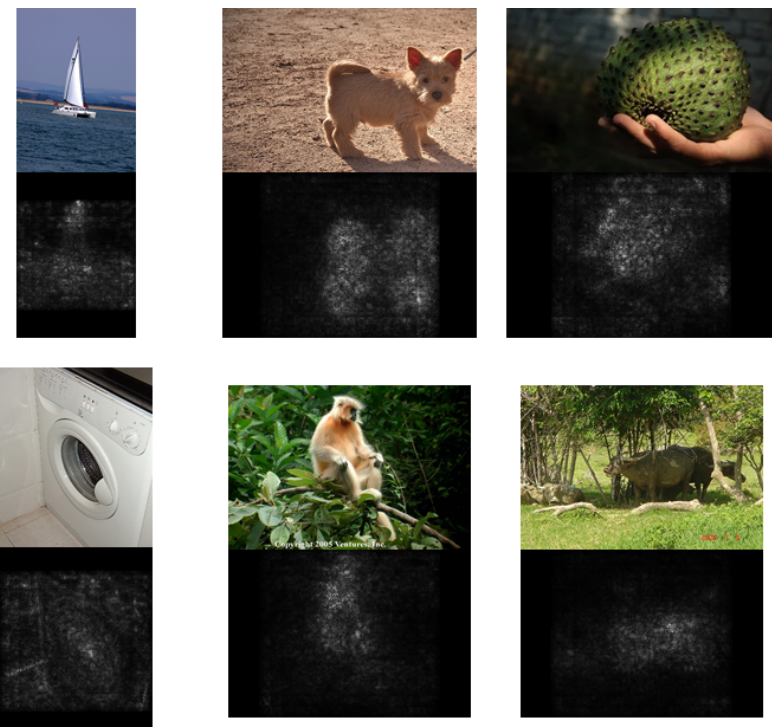
Gradient Saliency
The simplest map: how much the output reacts to each pixel.
- Wiggle a pixel a little; watch the output
- Big output move = important pixel
- One backward pass scores every pixel at once
A heat map of where the prediction is most sensitive.
Beyond Raw Gradients
One weakness: a confident model has a flat slope.
- An important pixel can still score near zero
- Fix: average the slope along a path from a blank image
- Integrated gradients: the whole climb, not one point
Same heat-map idea, sturdier scores.
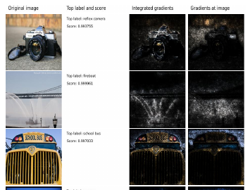
Saliency on Your Photo
Demo
- Load a pretrained image classifier
- Backprop to the input pixels
- Overlay the gradient as a heat map
A Colab notebook: see what the model looks at.
What Attribution Answers
Answers
- Which inputs moved this output
- Sign and rough size
- Spots obvious shortcuts
Does not
- Reveal internal mechanism
- Promise faithfulness
- Explain the whole model
Attribution Can Mislead
Some saliency maps barely depend on the model.
Randomize the weights and the map hardly changes: a red flag for faithfulness.
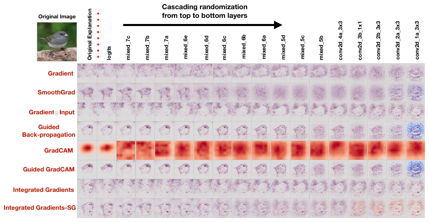
Probing & Attention
What does a hidden layer know
Inside the Hidden Layers
Each layer turns the input into a vector of activations.
- That vector is the model's internal state
- Attribution stays at the input
- Probing looks inside instead
What has the network already figured out here?
Linear Probes
Train a tiny classifier on a frozen layer's activations.
The probe
If a simple linear readout recovers a concept, that concept is present in the layer.
Example: probe for part-of-speech, or sentiment, or color.
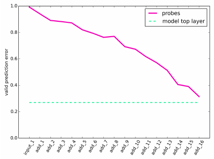
Reading the Probe
High probe accuracy is suggestive, not proof.
- The concept is decodable from the layer
- The model may not actually use it
- A strong probe can learn the concept itself
- Control task: random labels the probe still fits
Decodable is not the same as used.
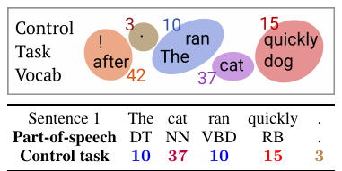
Attention Weights
A transformer lets each token look at other tokens.
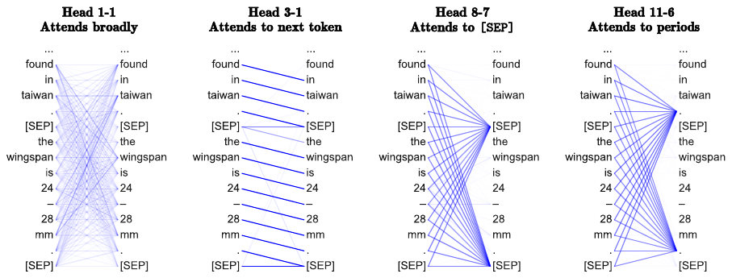
Darker line = more weight. Real heads have real habits: broad, next token, [SEP], periods.
Attention Looks Like Explanation
It is tempting to read attention as "what the model used".
- A pronoun attends to its noun
- A verb attends to its subject
- The picture feels intuitive
Intuitive, but is it the real reason?
Attention Is Not Explanation
Different attention patterns, same output: the weights need not be the reason.
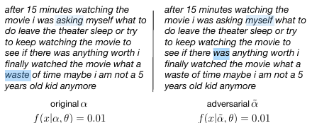
Treat attention maps as a clue, not a verdict.
...Is Not Not Explanation
A rebuttal answered within the same year.
- It depends on what "explanation" means
- The adversarial patterns fail simple diagnostics
- Attention can still be useful evidence
An open scientific debate, not a settled verdict.
Mechanistic Interpretability
Reverse-engineering the computation
A Different Goal
Earlier tools describe behavior. This one explains it.
Mechanistic interpretability
Reverse-engineer the network into algorithms a human can read.
Treat the model like code to be decompiled.
Circuits
A circuit is a small subgraph that does one job.
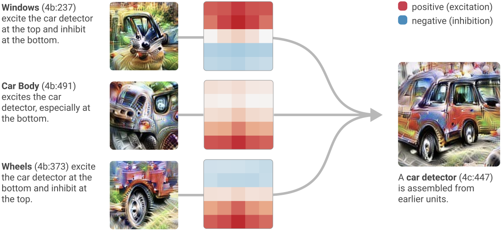
Windows, body, wheels: three earlier units wire into a car detector.
Neurons as Concepts
In vision models, some neurons fire for one clear idea.
- A curve-detector neuron
- A dog-head neuron
- Wired together into recognizable parts
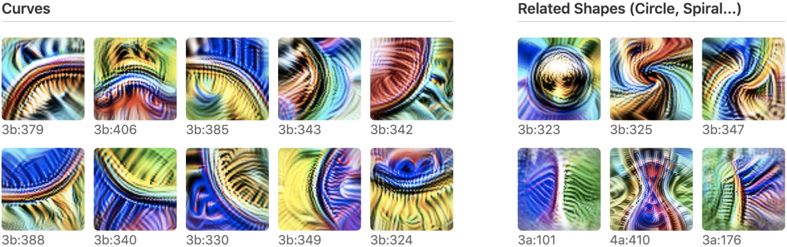
Evidence that structure, not chaos, lives inside.
The Transformer Framework
A 2021 paper gave transformers a clean math description.
- Attention heads as composable operations
- Information flows on a shared "residual stream"
- Heads read from it and write back to it
Induction Heads
A real circuit found in language models.
What it does
Saw "A B" earlier? On the next "A", predict "B" again.
A copy-the-pattern rule, built from two cooperating heads.
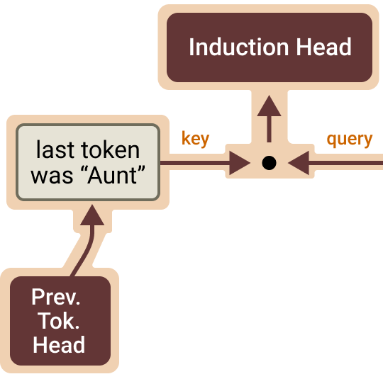
Induction in Action
The pattern that lets a model copy from context.
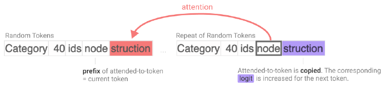
Find the earlier match, copy what followed. It even works on random tokens.
Why Induction Matters
Induction heads underlie much of in-context learning.
- They emerge sharply during training
- Their arrival lifts few-shot ability
- A mechanism, traced to a circuit
Behavior explained by structure, not guesswork.
The Polysemantic Wall
Most neurons are not one clean concept.
A single neuron fires for many unrelated things: polysemantic, hard to read.
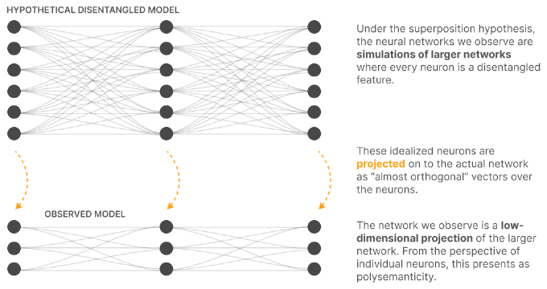
This blocks naive "one neuron, one meaning" reading.
Superposition
The model packs more features than neurons.
- Features overlap in the same dimensions
- Each neuron carries a mix
- Like too many ideas in too few words
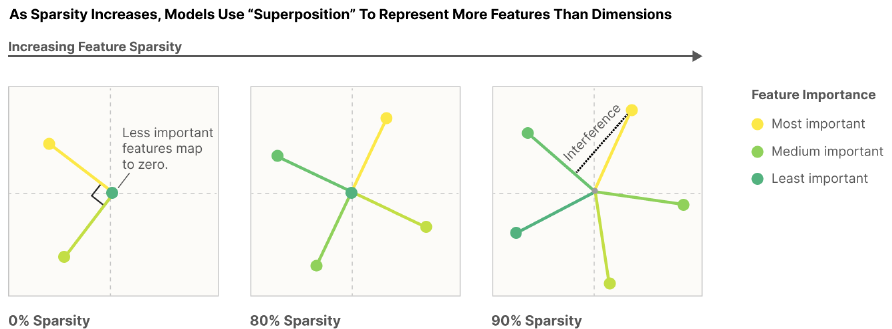
Superposition is why neurons look messy; sparse features make it worthwhile.
Sparse Autoencoders & Steering
Readable features, dials you can turn
Unpacking Superposition
Goal: turn the mixed neurons back into clean features.
- Spread activations into a wider space
- Force only a few to be active at once
- Each active one means a single thing
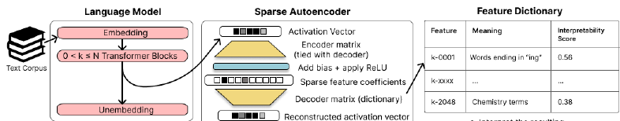
Trade few crowded dimensions for many clear ones.
The Sparse Autoencoder
An SAE (Sparse AutoEncoder) widens, then rebuilds.
Few active units carry a readable meaning.
Monosemantic Features
Each SAE feature fires for one human concept.
- A "DNA sequence" feature
- A "legal language" feature
- A "base64 text" feature
Monosemantic = one feature, one meaning.
Scaling Up
In 2024, this scaled to a production model.
- Millions of features pulled from Claude 3 Sonnet
- Cities, famous people, code bugs, scam emails
- A "Golden Gate Bridge" feature
Feature Steering
A clean feature is also a dial you can turn.
Amplify a feature, change the model's behavior.
Golden Gate Claude
Turn up one feature and watch the model obsess.
- Amplify the Golden Gate Bridge feature
- The model steers every answer to the bridge
- Causal proof the feature is real
Steering tests a feature by intervention.
A Steering Widget
Demo
- Pick a known feature from an open SAE
- Slide its strength from off to high
- Watch the generated text shift live
A Colab notebook: steer an open model in real time.
Steering for Safety
The same dials could turn down bad behavior.
- Features exist for deception, bias, scam email
- Watch them fire; damp them if needed
- A control knob, not just a viewer
Interpretability becomes intervention (still early days).
Uses & Limits
Debugging, auditing, and faithfulness
What It Buys Us
Debug
Trace a wrong answer to its cause.
Audit
Surface bias and hidden shortcuts.
Safety
Detect and steer harmful behavior.
What the Law Demands
The EU's GDPR touches automated decisions in two places.
Article 22
A right not to be subject to a solely automated decision with legal effect.
Articles 13–15
A right to "meaningful information about the logic involved".
Loans, hiring, insurance: decisions people can contest.
A "Right to Explanation"?
The famous phrase is weaker than it sounds.
- It appears only in a non-binding recital, not the articles
- Scholars dispute whether GDPR grants it at all
- EU AI Act (Art. 86): explanation right for high-risk AI decisions
Regulation is converging on explanation, slowly and with caveats.
The Faithfulness Problem
An explanation is faithful only if it matches the real cause.
A plausible explanation can still be wrong about why the model decided.
Plausible and faithful are not the same thing.
Models Can Rationalize
Ask a model to explain itself and it gives fluent reasons.
- The story can sound convincing
- Yet not reflect the true computation
- A confident answer is not a faithful one
Self-explanations need their own audit.
Always Sanity-Check
Before trusting any explanation, test it.
- Randomize weights: does the map change?
- Intervene: does behavior actually shift?
- Hold out: does it predict new cases?
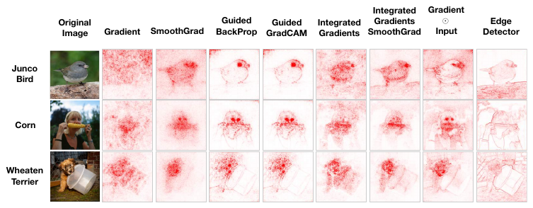
Trust an explanation only after it survives a test.
Frontier: Attribution Graphs
2025: trace a whole computation, step by step.
- Dallas fires "Texas"; Texas fires "Austin"
- Writing poetry, the model picks the rhyme ahead
- Tools open-sourced; explore graphs on Neuronpedia
From single features to full circuits, on demand.
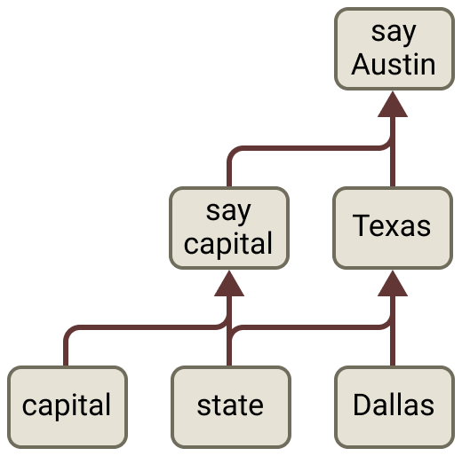
Frontier: Does the Model Say What It Thinks?
Reasoning models show their work. Can we trust it?
Models use a slipped-in hint, yet usually admit it under 20% of the time.
Chain-of-thought is another explanation to audit, not ground truth.
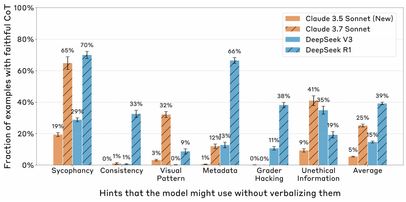
Frontier: An MRI for AI
Interpretability is now framed as a safety race.
- Understand models before they get too powerful
- Goal: reliably detect most model problems by 2027
- Interpretability as the "MRI" run on every model
From research curiosity to a deployment requirement.
Key Takeaways
- Accuracy alone does not earn trust
- Attribution: which inputs moved the output
- Mechanistic: reverse-engineer the algorithm
- Sparse features give readable dials to steer
Faithfulness is the test every explanation must pass.
From a right answer to a readable reason.